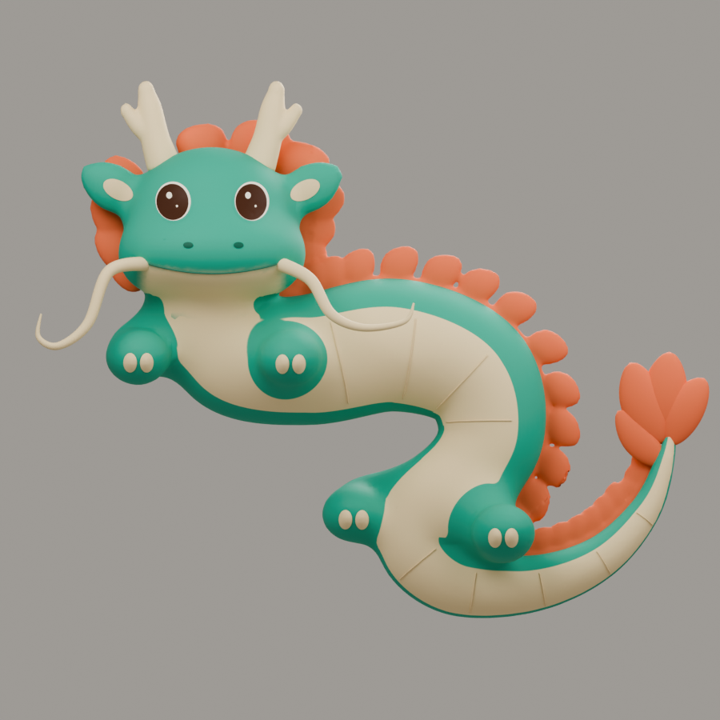
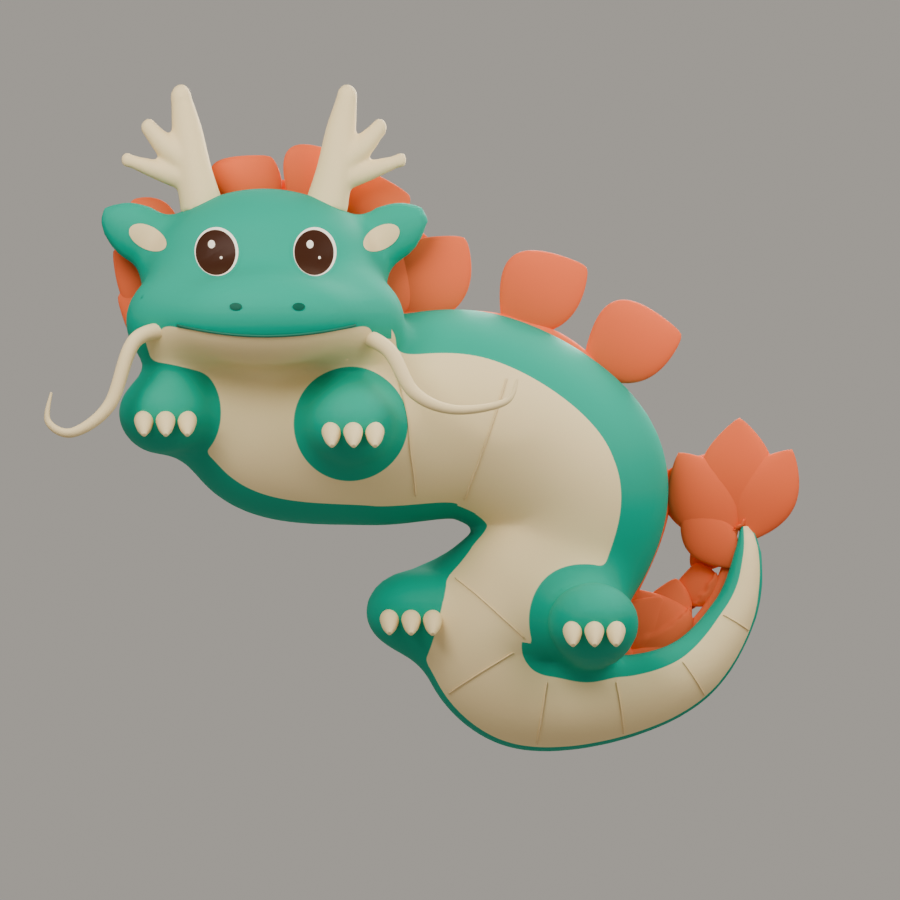
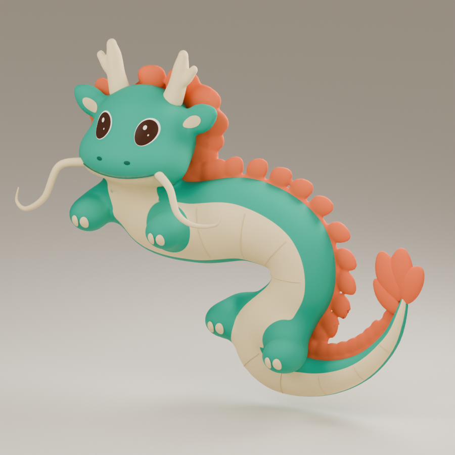
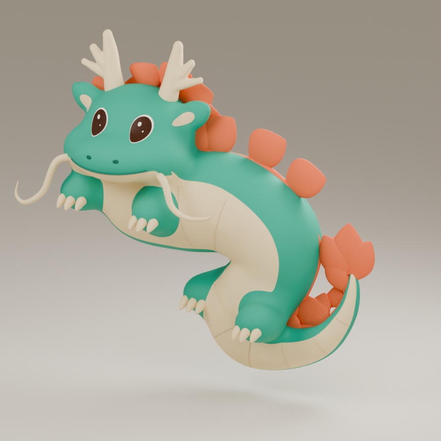
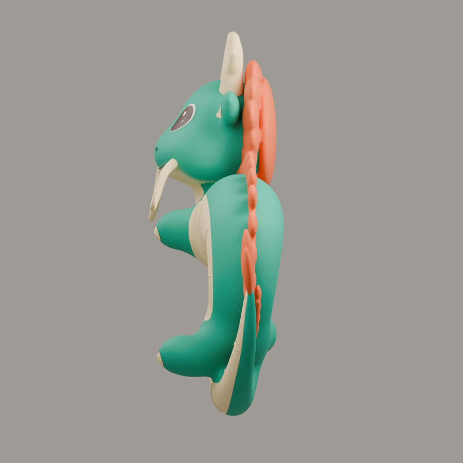
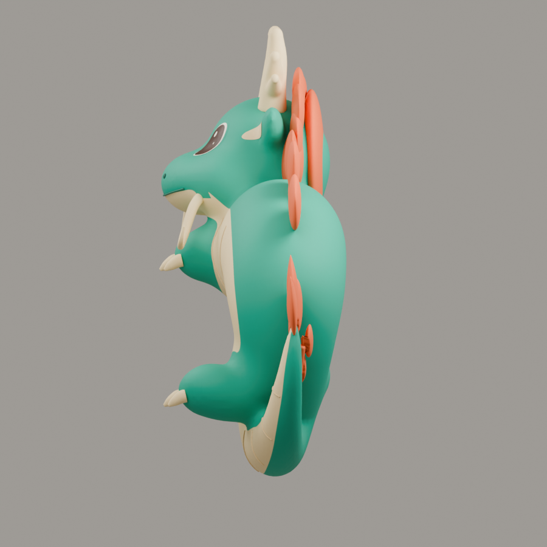
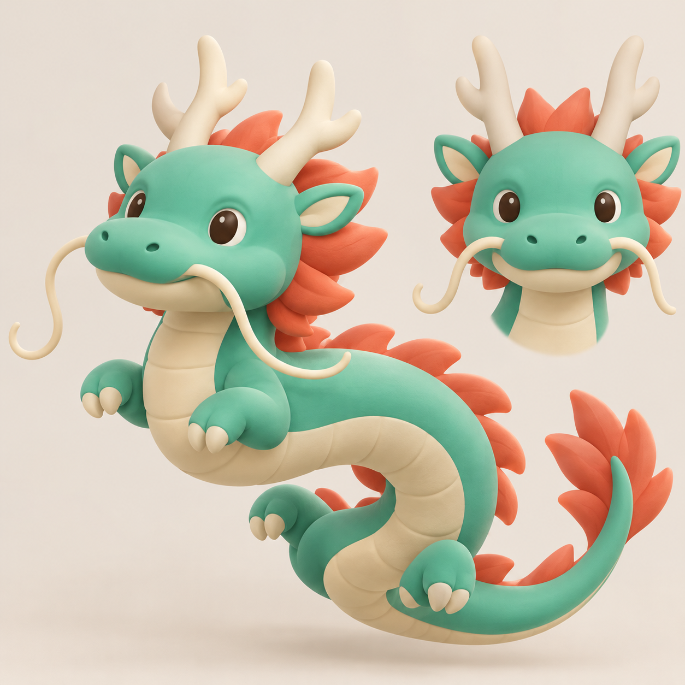

SaJu 용 V7 · 실제 모델 비교
기술 검증 후보이며 시안 충실도는 부족합니다. 최종 외형 승인을 주장하지 않습니다. 얼굴/눈/주둥이/몸선/갈기를 재구성할 필요가 있습니다. 아래 외형 비교를 먼저 확인하세요.
Joseph에서 제작한 새 후보입니다. 볼과 짧은 주둥이, 통통한 S 몸과 연결된 꼬리, 가지 뿔, 넓은 잎 갈기, 네 발과 입체 발톱을 수정했습니다. 앱 기본 모델은 변경하지 않았습니다.
아래 여섯 장은 실제 GLB를 Blender로 다시 불러와 같은 카메라·정사영 크기·프레임·해상도·샘플로 렌더한 이미지입니다. 승인된 2D 이미지와는 카메라가 보정되지 않았으므로 정확한 픽셀 일치를 주장하지 않습니다.
정면

V6 · 기존 보존본
V7 · 새 후보3/4

V6 · 기존 보존본
V7 · 새 후보옆면

V6 · 기존 보존본
V7 · 새 후보실제 GLB idle · 6초
실제 렌더 72프레임, 640×640, 12fps. GLB와 원본의 idle은 24fps 6초이며 끝 포즈를 검사했습니다.
승인된 2D 디자인 원본

이 이미지는 디자인 기준입니다. 위의 세 방향 이미지와 영상이 실제 모델 렌더입니다.
GLB SHA256: 4c15f0070372071d35f8f659b1a1017e4665381200dbba42904637bf30e16d9e